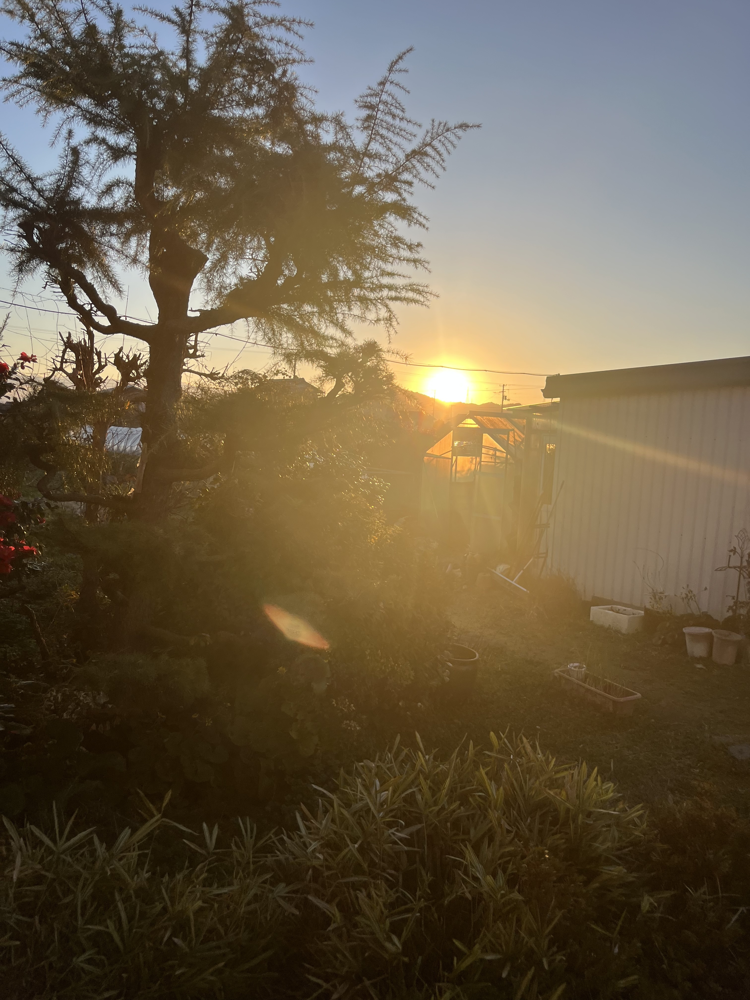

茶割星人
2026-1-1
あけましておめでとうございます

高校生の頃部室で発見した汚いノートに誰かがこう書き残していました。「初日の出は必ず見ましょう。1月1日だけは特別です。」それ以降元旦の朝日だけは普段の朝日と違うと信じ、毎年初日の出を拝んでいます。拝んで就寝。
昼から親戚の集まり。赤ちゃんの頃から知っている従姪が大学生になり、髪を染めていてショックを受けた。時が経つのは早い。漁師の叔父が捌いた刺身をたらふく食う。
21時頃に駅前で旧友と集合。4人で飲む。日付が変わる前に1人が離脱。別の1人に「バケモンみたいなバーテンダー」を紹介したいと言われ繁華街へ。GANTZの敵キャラみたいな人の店で3時ごろまで飲んだ。
今朝公開した『新名祭に関する諸批判』について、締め切りの問題もあり（間に合わなかったけど）急ピッチで書き上げたので、書き加えたいことや補足したいことが既にたくさん湧いてきている。また書きます。